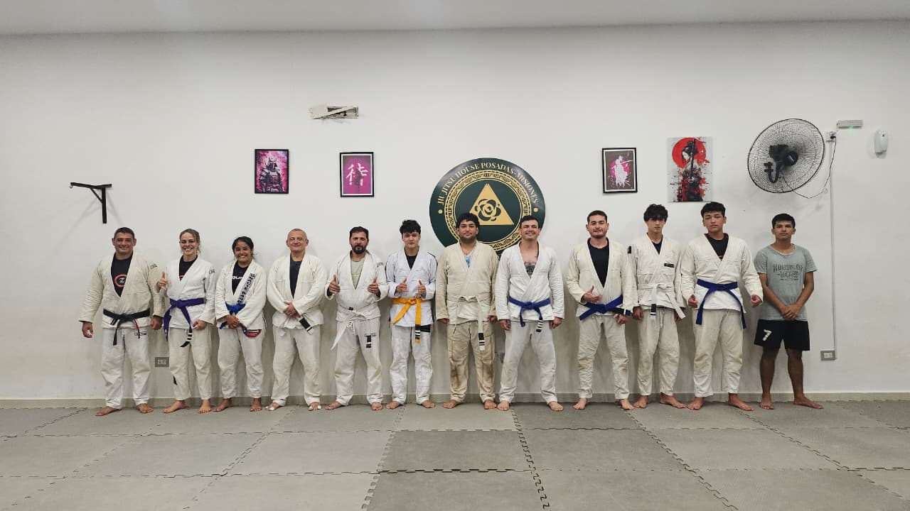
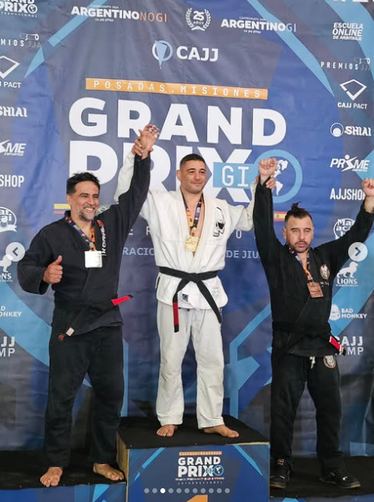
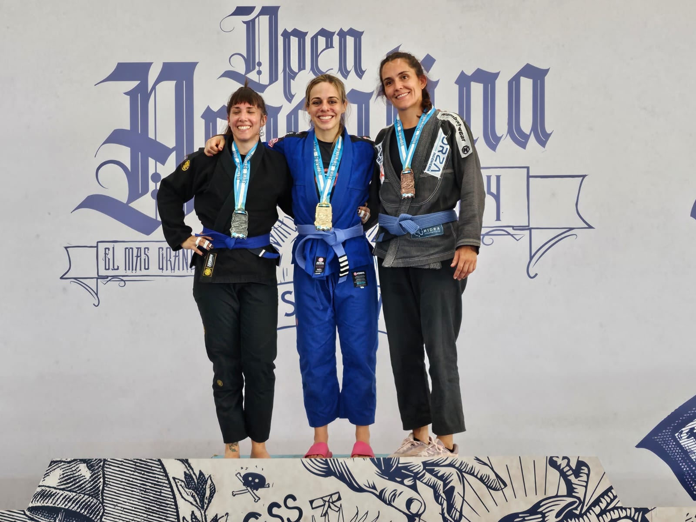

Brazilian Jiu-Jitsu en Posadas
Ofrecemos clases para todos los niveles, enfocadas en la técnica, la defensa personal y el desarrollo físico y mental.
Probar clase gratisSobre el Dojo
Fundado en 2023, PZ Team es una academia de Brazilian Jiu-Jitsu en Posadas que nace con el objetivo de difundir este arte marcial y brindar un espacio de entrenamiento serio e inclusivo.
Nos enfocamos en la disciplina, el respeto y el crecimiento personal, combinando técnica y acondicionamiento físico en un ambiente donde tanto principiantes como avanzados pueden desarrollarse a su propio ritmo.
Empezar ahora
Disciplina
Constancia y compromiso en cada entrenamiento.
Respeto
Un ambiente sano y de compañerismo.
Superación
Mejorar cada día dentro y fuera del tatami.
Comunidad
Un equipo que crece unido.
Profesores

Pablo Ricardo Zylberman
Cinturón NegroFundador y profesor principal de PZ Team y campeón argentino. Con una trayectoria marcada por la competencia y la enseñanza, lidera la academia con un enfoque técnico, disciplinado y orientado al crecimiento integral de cada alumno.

Maria Fernanda Butiuk
Cinturón MarrónCo-fundadora de PZ Team y campeona argentina y brasilera. Lidera el programa de Jiu Jitsu Kids, combinando alto nivel competitivo con una enseñanza cercana, enfocada en el desarrollo, la confianza y los valores de cada alumno.
Modalidades
Elegí cómo querés entrenar
Gi
Entrenamiento tradicional con kimono.
No-Gi
Modalidad dinámica sin kimono.
Kids
Clases para niños.
Empezá hoy
Sumate a nuestras clases y probá una clase sin compromiso.
Escribinos por WhatsApp